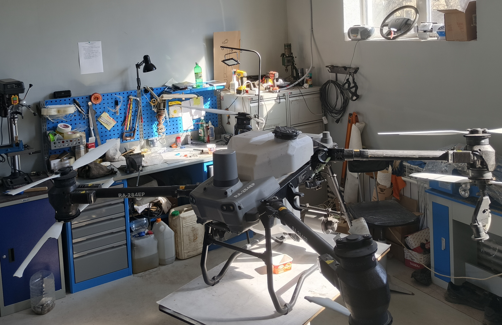
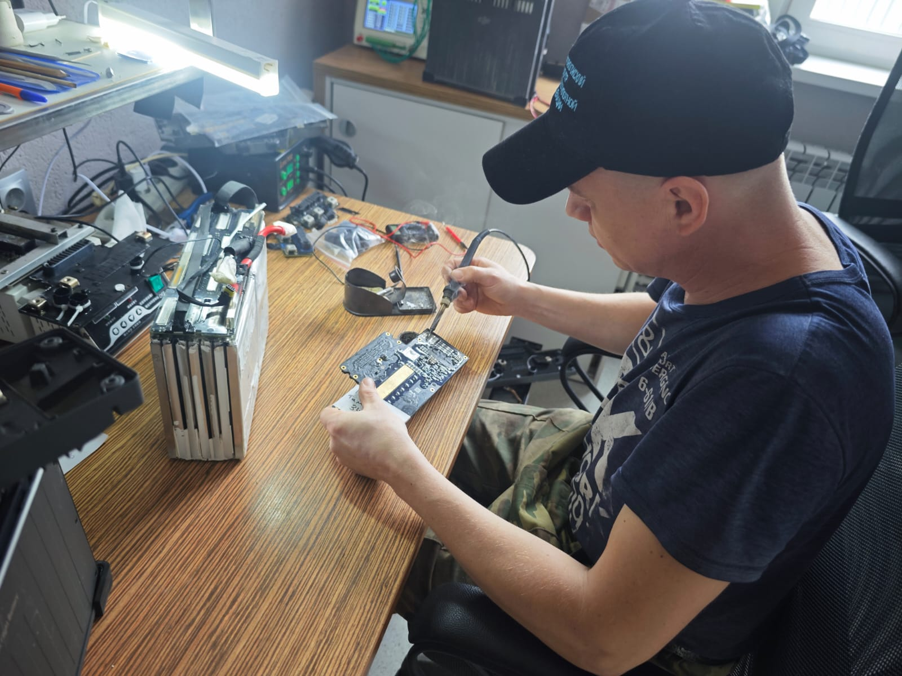
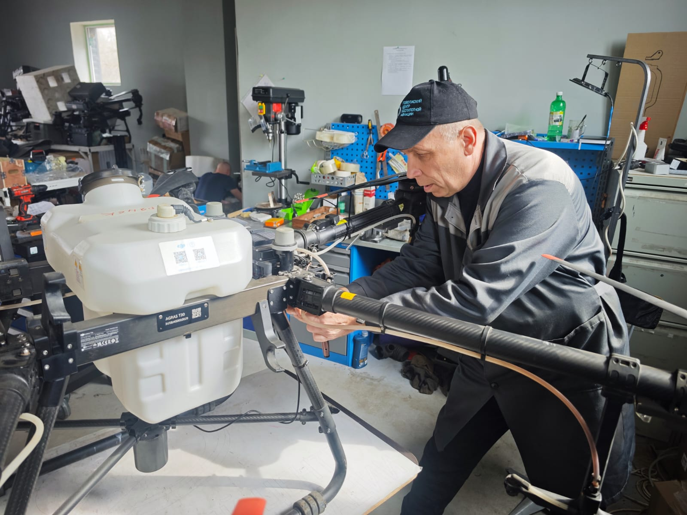

Диагностика неисправностей
Быстрая и точная диагностика оборудования для выявления причин неисправностей. По возможности — диагностика бесплатно.
- Проверка электронных систем
- Тестирование полётных характеристик
- Анализ данных логов полётов
Ремонт агродронов любой сложности: диагностика, замена комплектующих, восстановление полётных батарей, настройка и обслуживание. Работаем быстро, аккуратно и с гарантией.
Что ремонтируем
Агродроны всех типов, полётные батареи, силовую часть, электронику, системы внесения СЗР
Гарантия
На все выполненные работы предоставляем гарантию. Проверяем работоспособность перед выдачей.



Комплексный ремонт и обслуживание агродронов для поддержания их работоспособности и продления срока службы.
Быстрая и точная диагностика оборудования для выявления причин неисправностей. По возможности — диагностика бесплатно.
Ремонт двигателей, пропеллеров, рамы и других механических компонентов агродрона.
Профессиональное восстановление и обслуживание полётных батарей для продления их срока службы.
Ремонт и замена плат управления, контроллеров полёта, GPS-модулей и другого электронного оборудования.
Ремонт и настройка систем внесения СЗР: форсунок, насосов, баков и системы дозирования.
Обновление и настройка ПО, калибровка оборудования, восстановление после сбоев программного обеспечения.
Чёткий процесс от приёмки агродрона до выдачи после ремонта с гарантией качества.
Принимаем оборудование, фиксируем внешний вид и заявленные неисправности. Проводим диагностику (по возможности — бесплатно) для определения точной причины поломки.
После диагностики сообщаем точную стоимость ремонта и сроки выполнения работ. Согласовываем с заказчиком и приступаем к ремонту только после подтверждения.
Проводим ремонт с использованием качественных комплектующих и профессионального оборудования. Соблюдаем технологические стандарты и требования безопасности.
После ремонта проводим комплексное тестирование всех систем агродрона. Проверяем работоспособность в условиях, приближенных к реальным полётам.
Передаём отремонтированный агродрон заказчику с полным комплектом документации. Предоставляем гарантию на выполненные работы и заменённые комплектующие.
Профессиональный подход к ремонту агродронов с фокусом на качество и долговечность.
Наши инженеры имеют многолетний опыт работы с агродронами различных марок и моделей. Проходили специализированное обучение у производителей оборудования.
Используем только оригинальные или совместимые комплектующие от проверенных поставщиков. Это гарантирует долговечность ремонта и стабильную работу оборудования.
Оснащены профессиональным диагностическим и ремонтным оборудованием, которое позволяет точно выявлять неисправности и качественно выполнять ремонт.
Предоставляем гарантию на все выполненные работы. Если проблема повторится в течение гарантийного срока — устраним её бесплатно.
С какими проблемами чаще всего сталкиваются операторы агродронов и как мы их решаем.
Ремонт после падений, столкновений, повреждений от веток и других механических воздействий.
Выход из строя контроллеров полёта, GPS-модулей, датчиков, регуляторов скорости.
Снижение ёмкости, разбалансировка элементов, повреждение оболочки, проблемы с разъёмами.
Засорение форсунок, поломки насосов, утечки в баках, сбои системы дозирования.
Перегрев, потеря мощности, вибрации, заклинивание подшипников, повреждение обмоток.
Сброс настроек, ошибки калибровки, проблемы с подключением, потеря связи с пультом.
Опишите проблему с вашим агродроном — мы свяжемся с вами для уточнения деталей и расчёта стоимости.
Быстро описать проблему по телефону и получить предварительную консультацию.
Что подготовить перед обращением